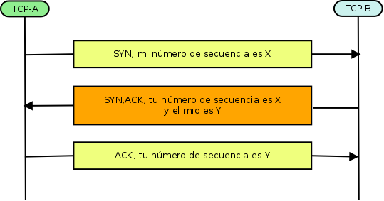
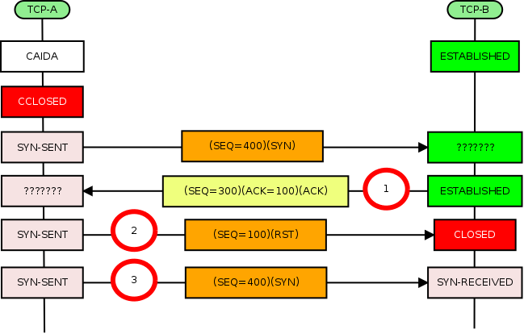
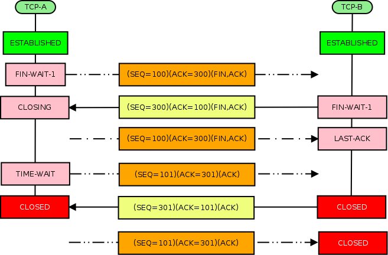

Protocolo TCP¶
Documentación y RFCs¶
Introducción¶
La función de TCP, es convertir el intercambio de datagramas, en una conexión de datos entre aplicaciones sólida y fiable, para ello, encaja en una arquitectura de protocolos entre la capa de red (simple y poco fiable) y la capa de aplicación, a las que a través de sus interfaces, ofrece un conjunto de funciones que permiten abrir y cerrar conexiones y enviar y recibir datos, aunque se deja libertad a los fabricantes a la hora de diseñar las interfaces de un sistema operativo particular
TCP es un protocolo orientado a la conexión, fiable y entre dos extremos, diseñado para encajar en una jerarquía en capas de protocolos que soportan aplicaciones sobre múltiples redes.

TCP presenta interfaz por un lado con el usuario o los procesos de aplicación y por el otro con un protocolo de más bajo nivel como es el protocolo de internet (IP). Esta interfaz consiste en un conjunto de llamadas, de forma muy similar a las llamadas que un sistema operativo proporciona a los procesos de aplicación para manipular ficheros, por ejemplo, hay llamadas para abrir y cerrar conexiones y para enviar y recibir datos por las conexiones establecidas.
Aunque se deja considerable libertad a los fabricantes de implementaciones de TCP a la hora de diseñar las interfaces que sean apropiadas para el entorno de un sistema operativo particular, se exige un mínimo de funcionalidad en la interfaz TCP/usuario de cualquier implementación válida.
Nota
TCP está pensado para proporcionar un servicio fiable de comunicación entre procesos en un entorno con múltiples redes.
Como se ha hecho notar más arriba, el propósito principal de TCP consiste en proporcionar un servicio de conexión o circuito lógico fiable y seguro entre pares de procesos. Para proporcionar este servicio encima de un entorno de internet menos fiable, el sistema de comunicación requiere de mecanismos relacionados con las siguientes áreas:
Transferencia básica de datos
Fiabilidad
Control de flujo
Multiplexamiento
Conexiones
Prioridad y seguridad
Transferencia básica de datos¶
TCP es capaz de transferir un flujo continuo de octetos en cada sentido entre sus usuarios empaquetando un cierto número de octetos en segmentos para su transmisión a través del sistema de internet. En general, los módulos de TCP deciden cuándo bloquear y enviar datos según su propia conveniencia.
Algunas veces los usuarios necesitan estar seguros de que todos los datos que habían entregado al módulo de TCP han sido transmitidos. Para este propósito se define una función “push” («enviar inmediatamente»). Un “push” en un cierto instante causa que los módulos de TCP envíen y entreguen inmediatamente al usuario receptor los datos almacenados hasta ese instante
Fiabilidad¶
El módulo de TCP debe poder recuperar los datos que se corrompan, pierdan, dupliquen o se entreguen desordenados por el sistema de comunicación del entorno de internet. Esto se consigue asignando un número de secuencia a cada octeto transmitido, y exigiendo un acuse de recibo (ACK, acknowledgment) del módulo de TCP receptor. Si no se recibe un ACK dentro de un cierto plazo de expiración prefijado, los datos se retransmiten. En el receptor, se utilizan los números de secuencia para ordenar correctamente los segmentos que puedan haber llegado desordenados y para eliminar los duplicados. La corrupción de datos se trata añadiendo un campo de suma de control (“checksum”) a cada segmento transmitido, comprobándose en el receptor y descartando los segmentos dañados.
Nota
TCP se recupera de los errores del sistema de comunicación de internet.
Flujo de control¶
TCP proporciona al receptor un medio para controlar la cantidad de datos enviados por el emisor. Esto se consigue devolviendo una «ventana» con cada ACK, indicando el rango de números de secuencia aceptables más allá del último segmento recibido con éxito. La ventana indica el número de octetos que se permite que el emisor transmita antes de que reciba el siguiente permiso.
Multiplexamiento¶
Para permitir que muchos procesos dentro de un único “host” utilicen simultáneamente las posibilidades de comunicación de TCP, el módulo de TCP proporciona una serie de direcciones o puertos dentro de cada “host”. Concatenadas con las direcciones de red y de “host” de la capa de comunicación internet conforman lo que se denomina una dirección de conector (“socket”). Un par de direcciones de conector identifica de forma única la conexión. Es decir, un conector puede utilizarse simultáneamente en múltiples conexiones.
La asignación de puertos a los procesos se gestiona de forma independiente en cada “host”. Sin embargo, resulta de la máxima utilidad asignar a los procesos más utilizados frecuentemente conectores fijos que se hacen conocer de forma pública. Estos servicios pueden entonces ser accedidos a través de direcciones conocidas públicamente.
Conexiones¶
La fiabilidad y los mecanismos de control de flujo descritos más arriba exigen que los módulos de TCP inicialicen y mantengan una información de estado para cada flujo de datos. La combinación de esta información, incluyendo las direcciones de los conectores, los números de secuencia y los tamaños de las ventanas, se denomina una conexión. Cada conexión queda especificada de forma única por un par de conectores que corresponden con sus dos extremos.
Cuando dos procesos desean comunicarse, sus módulos de TCP deben establecer primero una conexión (inicializar la información de estado en cada lado). Cuando la comunicación se ha completado, la conexión se termina o cierra con la intención de liberar recursos para otros usos.
Como las conexiones tienen que establecerse entre “hosts” no fiables y sobre un sistema de comunicación internet no fiable, se utiliza un mecanismo de acuerdo que usa números de secuencia basados en tiempos de reloj para evitar una inicialización errónea de las conexiones.
Prioridad y seguridad¶
Los usuarios de TCP pueden indicar el nivel de seguridad y prioridad de su comunicación. Se emplean valores por defecto cuando estas características no se necesiten.
Interfaces¶
La interfaz TCP/usuario proporciona al usuario funciones de llamada al módulo de TCP:
OPEN y CLOSE, ara abrir o cerrar una conexión
SEND y RECEIVE, para enviar y recibir datos
STATUS, para obtener información de estado sobre una conexión
Estas llamadas son del mismo tipo que otras llamadas al sistema operativo realizadas desde programas de usuario como, por ejemplo, las llamadas para abrir, leer y cerrar un fichero.
La interfaz TCP/internet proporciona llamadas para enviar y recibir datagramas direccionados a los módulos TCP en cualquier “host” del sistema de internet.
Comunicación fiable¶
La transmisión es fiable gracias al uso de números de secuencia y de acuses de recibo. Básicamente, se le asigna un número de secuencia a cada octeto de datos.
Los segmentos también llevan un número de acuse de recibo que es el número de secuencia del siguiente octeto de datos esperado en la transmisión en el sentido inverso. Cuando el módulo de TCP transmite un segmento conteniendo datos, pone una copia en una cola de retransmisión e inicia un contador de tiempo; si llega el acuse de recibo para esos de datos, el segmento se borra de la cola. Si no se recibe el acuse de recibo dentro de un plazo de expiración, el segmento se retransmite.
Nota
La llegada del acuse de recibo, no garantiza que los datos ya hayan sido entregados al usuario final, sino, únicamente, que el TCP receptor, ha asumido la responsabilidad de hacerlo.
Para controlar el flujo de datos entre los módulos de TCP, se utiliza un mecanismo de flujo de control, mediante el cual, el TCP receptor devuelve una ventana al TCP emisor. Esta ventana especifica el número de octetos, a contar a partir del número del acuse de recibo, que el TCP receptor está en ese momento preparado para recibir.
Establecimiento y finalización de la conexión¶
Para identificar los distintos flujos de datos que un módulo TCP puede manejar simultáneamente, TCP proporciona un identificador de puerto.
Para disponer de direcciones únicas dentro de cada TCP, se concatena la dirección de internet que identifica al módulo de TCP con el identificador de puerto para así conformar una dirección de conector (socket) que será única a largo de todo el conjunto de redes interconectadas. Una conexión queda completamente especificada por el par de conectores de sus extremos.
Una conexión se especifica en la llamada de apertura OPEN con los argumentos de un puerto local y una dirección de conector remoto. Una petición pasiva OPEN significa que el proceso desea aceptar peticiones de conexión entrantes en vez de intentar iniciar directamente una conexión.
Los procedimientos para establecer conexiones utilizan el indicador de control de sincronización SYN e involucran un intercambio de tres mensajes. Se ha denominado a este intercambio como el acuerdo en tres pasos three-way handshake
La finalización de una conexión también involucra el intercambio de segmentos, en este caso transportando un indicador de control FIN
Comunicación de datos¶
TCP puede almacenar datos del usuario emisor y enviar estos en segmentos según su propia conveniencia, siempre y cuando no se invoque la función PUSH, en cuyo caso, TCP tiene que enviar todos los datos pendientes. Cuando el TCP receptor ve el indicador PUSH, no debe esperar más datos antes de pasar los datos al proceso receptor (el propósito de la función en indicación PUSH, consiste en transportar inmediatamente los datos desde el usuario emisor al usuario receptor).
Formato de la cabecera¶
Los segmentos de TCP se envían como datagramas de Internet, la cabecera del protocolo de internet, transporta varios campos de información, entre los que se incluyen las direcciones de los host de origen y destino.

El número de puerto de origen
El númro de puerto de destino
Número de secuencia. Si SYN está puesto a 1, es el número de secuencia original, entonces, el primer octeto de datos es ISN+1.
Número de acuse de recibo. Si ACK es 1, contiene el valor del siguiente número de secuencia que el emisor del segmento espera recibir. Una vez que la comunicación está establecida, este número se envía siempre.
Longitud cabecera. Número de palabras de 32 bits que ocupa la cabecera TCP.
Bits de código.
URG, hace significativo el campo “puntero urgente”
ACK, hace significativo el campo “número de acuse de recibo”
PSH, función de entregar datos inmediatamente
RST, reiniciar conexión.
SYN, sincronizar los números de secuencia.
FIN, últimos datos del emisor.
Ventana. Número de octeto de datos a contar a partir del número indicado en el campo “número de acuse de recibo” que el emisor de este segmento está dispuesto a aceptar.
Suma de control. Es el complemento a 1 de 16 bits de la suma de los complementos a 1 de todas las palabras de 16 bits de la cabecera y el texto. La suma de control, también incluye una pseudocabecera que contiene la dirección de origen, la dirección de destino, el protocolo y la longitud del segmento TCP.
Puntero urgente. El puntero urgente apunta al número de secuencia del octeto al que siguen los datos urgentes, este campo, sólo se interpreta si el bit URG es 1.
Opciones. Variable, existen dos posibilidades para el formato opción:
Un octeto único con el tipo de opción.
Un octeto con el tipo de opción, otro con la longitud de la opción y los datos de la opción (el octeto longitud, tiene en cuenta los 3 campos).
Números de secuencia¶
El hecho de que todo octeto de datos enviado por una conexión TCP tenga asociado un número de secuencia, constituye una noción fundamental en el diseño de TCP.
El mecanismo de acuse de recibo es acumulativo, de tal forma, que el acuse de recibo de un número de secuencia X, indica que todos los octetos hasta, pero no incluyendo X, han sido recibidos.
Un segmento ubicado en la cola de retransmisión queda completamente confirmado por un acuse de recibo si la suma de su número de secuencia inicial y su longitud, es menor o igual que el valor del acuse de recibo indicado en el segmento entrante.
¿Cómo se selecciona el número de secuencia inicial? Si partimos de la premisa que si abrimos y cerramos una sucesión de conexiones muy rápidamente, o si una conexión se corta acompañada de una perdida de memoria, podría dar lugar a segmentos duplicados. Para evitar cierta confusión, se debe evitar que los segmentos de una conexión, utilicen los números de secuencia que psiblemente estén circulando pr la red, de otra conexión anterior.
Cuando se crean nuevas conexiones, se utiliza un generador de números de secuencia de 32 bits. El generador, está asociado a un reloj de 32 bits, cuyo bits menos significativo, se incrementa aproximadamente cada 4 microsegundos, de forma, que el ISN, rota cada 4,55 horas (a 2 MB/s, a 100 Mb/s, la rotación, sería cada 5,4 minutos).
Para estar seguro de que un TCP no cree un segmento que transporte un número de secuencia que podría estar duplicado por la existencia de otro anterior que todavía permanece en la red, TCP debe permanecer en silencio durante el tiempo de vida máximo de un segmento (MSL) antes de que asigne cualquier número de secuencia tras arrancar o recuperarse de una caída en la que se perdieron los números de secuencia en uso (el MSL se toma de 2 minutos).
Para cada conexión, existe un número de secuencia de envío y un numero de secuencia de recepción (el numero de secuencia de envío inicial “ISS”, lo elige el TCP emisor y el numero de secuencia inicial de recepción “IRS”, se asume durante el procedimiento de establecimiento de conexión).
Para que una conexión quede establecida o inicializada, los dos TCP deben sincronizarse entre si mediante sus números de secuencia iniciales. Esto se consigue durante el establecimiento de la conexión mediante el intercambio de segmentos que transportan un bit de control (SYN) y los números de secuencia iniciales.
La sincronización requiere que cada parte envíe su propio numero de secuencia inicial y reciba una confirmación de su llegada en la forma de acuse de recibo, cada parte debe recibir el número de secuencia inicial de la otra parte y enviar un acuse de recibo como confirmación.
Es necesario un acuerdo de tres pasos porque los números de secuencia no están sujetos a un reloj global de la red y los TCP puede que tengan diferentes mecanismos para elegir los ISN.
Establecimiento de la conexión¶
El procedimiento de acuerdo en tres pasos para establecer una conexión, también funciona si dos TCP simultáneamente inician la conexión, en este caso, cada TCP recibe un segmento SYN que no lleva acuse de recibo, tras haber enviado su SYN.
La llegada de un segmento SYN duplicado, hace creer al receptor que está en progreso de una iniciación simultánea, un uso adecuado de los segmentos de tipo “reset”, puede eliminar la ambigüedad.

En una iniciación normal
Esta esperando recibir el 101 de la secuencia y confirma la recepción del SYN que ocupa el lugar 100 de la secuencia.
Reconoce el SYN del TCP B, el número de secuencia es el mismo porque los ACK no consumen números de secuencia.
En una iniciación simultánea

El principal motivo del uso del acuerdo de 3 pasos es evitar que las iniciaciones de conexiones duplicadas anteriores causen confusión, se establece un mensaje de control especial RESET. Si el TCP receptor está en un estado no sincronizado (SYN_SENT, SYN-RECEIVED) vuelve al estado de LISTEN tras la recepción de un reset. Si el TCP está en uno de los estados sincronizados (ESTABLISHED, FIN-WAIT-1, FIN-WAIT-2, CLOSE-WAIT, CLOSING, LAST-ACK, TIME-WAIT), corta abruptamente la conexión e informa al usuario de ello.
Recuperación de un SYN duplicado anterior

SYN duplicado anterior que TCP B no diferencia y responde de forma normal.
TCP A detecta que el ACK es incorrecto y devuelve un RESET.
Cuando el SYN auténtico llega a TCP B, la sincronización procede de forma normal.
Una conexión establecida se dice que está medio abierta si uno de los TCP ha cerrado o interrumpido la conexión en su extremo sin avisar a la otra parte, o si los dos extremos de la comunicación han quedado desincronizados por culpa de una caída que cause perdidas de memoria. Si hubiera un intento de enviar datos en cualquier sentido, la conexión se reiniciaría automáticamente con un reset.
Estando en estado sincronizado, responde indicando que número de secuencia espera recibir.
Aprecia que este segmento no confirma nada y estando desincronizado envía un reset.
El TCP A, intenta restablecer la conexión.
Reglas de generación de RESET¶
Como regla general, se debe enviar un reset siempre que llegue un segmento que aparentemente no este destinado para la conexión actual.
Hay 3 grupos de estados:
Si la conexión no existe (CLOSED), se envía un RESET como respuesta a cualquier segmento entrante excepto si es otro RESET (los SYN enviados a una conexión no existente, serán rechazados de esta forma). Si en el segmento entrante tiene significado el ACK, el RESET escoge como número de secuencia el valor del campo ACK, en caso contrario, es 0 y el ACK es igual al número de secuencia y la longitud del segmento entrante.
La conexión está en cualquier estado no sincronizado (LISTEN, SYN-SENT, SYN-RECEIVED) y el segmento entrante confirma un segmento no enviado (ACK inaceptable) o si tiene un nivel de prioridad distinto al solicitado, se envía un reset. Si nuestro SYN no ha sido confirmado y el nivel de prioridad del segmento entrante es más alto que el nivel solicitado, entonces, o se aumenta el nivel de prioridad local (si está permitido) o se envía un reset. Si nuestro SYN ha sido confirmado, el nivel de prioridad del segmento entrante debe concordar exactamente con el nivel de prioridad local, si no es así, se envía un reset.
Si la conexión está en un estado sincronizado (ESTABLISHED, FIN-WAIT-1, FIN-WAIT-2, CLOSE-WAIT, CLOSING, LAST-ACK, TIME-WAIT), cualquier segmento inaceptable (número de secuencia fuera de ventana o un número de acuse de recibo inaceptable) se envía un segmento ACK sin datos con el número de secuencia y un valor ACK indicando el siguiente número de secuencia que se espera recibir, la conexión permanece en el mismo estado.
Cierre de una conexión¶
CLOSE, es una operación que significa no tengo más datos que enviar, el usuario que hace la llamada CLOSE, puede continuar recibiendo hasta que se le indique que el otro lado ha cerrado también la conexión mediante otro CLOSE (por lo tanto, un programa puede iniciar varias llamadas SEND seguidas de un CLOSE y continuar recibiendo hasta que el interlocutor cierre la conexión con un CLOSE).
Se asume que TCP indicará al usuario que el otro lado de la conexión ha cerrado ésta, incluso si no hay llamadas RECEIVE pendientes, de forma que pueda cerrar su conexión limpiamente.
Una conexión TCP entregará de forma fiable todos los bufers enviados en llamadas SENT antes de que la conexión sea cerrada, los usuarios deben mantenerse leyendo en las conexiones que cierren hasta que TCP notifique que no hay mas datos.
Existen tres casos:
El usuario inicia el cierre de la conexión enviando CLOSE a TCP, TCP forma un segmento FIN y lo pone en la cola de salida, no acepta mas llamadas SEND y entra en estado FIN-WAIT-1. En este estado, se permiten las llamadas RECEIVE. Cuando el TCP remoto haya realizado el acuse de recibo del FIN y enviado su propio FIN, el TCP local puede realizar el acuse de recibo de este FIN (un TCP recibe un FIN y envía un ACK, pero no enviará su propio FIN hasta que el usuario cierre su conexión).
El TCP remoto inicia el cierre enviando FIN. Si llega un FIN no solicitado, el receptor responde con un ACK y advierte al usuario de que la conexión se esta cerrando, el usuario responde con CLOSE y el TCP envía un FIN tras enviar los datos restantes. El TCP espera hasta el ACK de su propio FIN y elimina la conexión, si el ACK no llega, la conexión aborta y se le notifica al usuario.
Ambos usuarios cierran simultáneamente. Cuando todos los segmentos que preceden a los FIN se han procesado y confirmado, cada TCP puede responder con un ACK el FIN que ha recibido, ambos, ante la recepción de los ACK, eliminarán la conexión.
Secuencia de cierre normal

Secuencia de cierre simultáneo
Comunicación de datos¶
Una vez establecida la conexión, los datos se transmiten mediante el intercambio de segmentos, como estos pueden perderse, TCP utiliza la retransmisión (tras un tiempo de espera) para asegurar la entrega de cada segmento.
TCP realiza ciertas comprobaciones sobre los números de secuencia y de acuse de recibo en los segmentos para verificar su admisión (pueden llegar duplicados).
La llamada del usuario CLOSE, implica la función de entrega inmediata PUSH, tal y como sucede con el indicador de control FIN en un segmento entrante.
Tiempo de espera de retrasnmisión¶
Debido a la variabilidad de las redes que componen un sistema de redes de internet y la gran cantidad de casos de conexiones TCP el tiempo de espera de retransmisión se debe determinar dinámicamente
Mídase el tiempo transcurrido entre el envio de un octeto de datos con un número de secuencia determinado y la recepción de un acuse de recibo que incluya ese número de secuencia (los segmentos enviados no tienen por qué concordar con los segmentos recibidos).
Este tiempo medido es el «tiempo de ida y vuelta (Round Trip Time o RTT) y basado en este, se calcula el tiempo de espera de retransmisión (RTO)
Ventana de recepción¶
TCP ve los datos enviados como una ecuencia de bytes, para limitr el número de datos que se pueden enviar simultáneamente y para proporcionar control de flujo del lado del receptor, TCP usa una ventana, que son todos los datos de la secuencia de bytes que el receptor permite que el remitente envíe (el remitente, sólo puede enviar los bytes incluidos en la ventana)
Cuando no existen datos o los ACK están en transito, se establece una coincidencia entre las ventanas de envío y la de recepción.
TCP contiene un campo de 16 bits, cuando el receptor obtiene datos, envía ACK indicando la recepción correcta e indicando el número de bytes que permeneceran en la ventana de recepción. Cuando la aplicación envía, confirma y recupera datos, la ventana de recepción y envío, se desplazaran a la izquierda

La ventana de recepción máxima tiene un tamaño fijo, la recepción actual, tiene un tamaño variable, que se corresponde con el número de datos restantes que el receptor permite que le envíe, este tamaño actual, es el valor del campo ventana anunciado en el segmento ACK.
Cuando el TCP receptor tiene una ventana de tamaño cero y llega un segmento debe todavía enviar un acuse de recibo con su próximo número de secuencia esperado y su tamaño de ventana actual (cero).

Sugerencias sobre la gestión de ventana:
Disponer de una ventana muy pequeña, provoca que los datos sean transmitidos en segmentos pequeños (a mayor tamaño, mejor rendimiento).
Que el receptor retrase la actualización hasta que el tamaño de ventana disponible sea de al menos el 20% o 40% del tamaño maximizo posible.
Que el emisor evite el envío de segmentos pequeños, hasta que la ventana sea lo bastante grande para enviar datos (excepto PUSH)
Advertencia
¡OJO! Los acuses de recibo no deben retrasarse, provocan retransmisiones.
Para optimizar el rendimiento TCP, el remitente, debe enviar suficientes paquetes, para completar la capacidad del enlace (Ancho de banda * RTT)
La capacidad, se conoce como el producto del retraso de ancho de banda (BDP), la canalización, puede sr ancha (ancho de banda alto) o estrecha (ancho de banda bajo), corta (RTT bajo) o larga (RTT alto), las canalizaciones anchas y largas, representan el BDP más elevado
Nota
El tamaño de ventana en el encabezado TCP es de 16 bits, lo que permite que TCP anuncie un tamaño máximo de ventana de 65535 bytes.
Puede calcular el rendimiento aproximado para un tamaño de ventana TCP determinado mediante la fórmula
Troughput = TCP Maximun Window Size / RTT
Configurando preferencias de TCP en Wireshark¶
En la mayoría de los casos, se puede utilizar la configuración por defecto para TCP, pero hay cosas que se pueden cambiar
Desde preferencias del protocolo Edit -> Preference -> Protocols -> TCP

Show TCPsummary in protocol tree. Marque esta opción si desea que la línea resumen TCP, se muestre en el arbol de protocolos
Validate the TCP checksum if possible. Esta característica, puede ralentizar el rendimiento, en la mayoría de los casos, no es recomendable
Allow subdisector to reasemble streams. Esta opción, es para el análisis de flujo
Analyze TCP sequence numbers. Cuando se establece, Wireshark, analiza los números de secuencia y rastrea fenómenos como retransmisiones, ACKs dupllicados, etc. Es una de las características importantes de Wireshark
Relative sequence numbers. Cuando está configurado, Wireshark, mostrará cada conexión TCO que comienza, con el número de secuencia igual a 0.
Nota
Los números de secuencia, son números entre 0 y \(2^{32}\), elegidos por el proceso TCP y que son difíciles de seguir (el estándar TCP, no establece ninguna regla para elegir este número), Wireshark, normaliza estos números para que empiecen por 0.
Track number of bytes in fligtht. Permite a Wireshark, rastrear la cantidad de bytes no reconocidos que fluyen en la red.
Calculate Conversation timestamp. Permite los cálculos de marcas de tiempo en TCP
Nota
TCP implementa la entrega confiable de datos retransmitiendo segmentos que no se reconocen dentro de un intervalo de tiempo de espera de retransmisión (RTO). La determinación dinámica precisa de un RTO apropiado es esencial para el rendimiento del TCP. El RTO se determina estimando la media y la varianza del tiempo medido de ida y vuelta (RTT, Round Trip Time), es decir, el intervalo de tiempo entre el envío de un segmento y la recepción de un acuse de recibo.
TCP, introduce una nueva opción Timestamp y define un mecanismo que utiliza esta opción, que permite, que casi todos los segmentos, incluidas las retransmisiones, se cronometren.
El remitente, coloca una marca de tiempo en cada segmento de datos que envía
El receptor, refleja esas marcas de tiempo en segmentos ACK
Una sola resta, da al remitente una medición de tiempo precisa. Utilizamos el nemonico RTTM (Medición del Tiempo de Ida y Vuelta) para ese mecanismo
Try heuristic subdissector first. Intanta decodificar un paquete usando un método heurśitico antes de usar un disector registrado en el puerto específico.
Ignore TCP timestamp in summary. Ignorar la opción timestamp en la cabecera TCP
Flags TCP de Wireshark¶
Por defecto, el disector TCP de Wireshark, ratrea el estado de cada sesión TCP y proporciona información adicional cuando se detectan problemas
El análisis, se realiza una vez para cada paquete TCP cuando se abre por primera vez un archivo de captura, los paquetes, se van procesando en el orden en que aparecen en la lista de paquetes.
Puede deshabilitar/habiltar esta función a través las preferencias de protocolo Analyze TCP sequence numbers
Los indicadores de análisis TCP, se agregan al árbol de protocolos TCP y pueden ser utilizados en la composición de filtros de visualización
Next sequence number, el último número de secuencia visto más la longitud del segmento
TCP ACK end un seen segment
TCP Dup ACK
TCP Fast retransmission
TCP Keep-Alive
TCP Keep-Alive ACK
TCP Out-Of-Order
TCP Port numbers reused, establecido cuando tenemos un SYN (no SYN y ACK) y una conversación existente que usa la misma dirección, y el número de secuencia es diferente al inicial de la conversación existente
TCP Previous segment not captured, se establece cuando el número de secuencia actual, es mayor que el siguiente número de secuencia esperado
TCP Spurious Retransmission
TCP Retransmission
TCP Windows full, se establece cuando el tamaño del egmento no es 0, sabemos el tamaño de la ventana en dirección inversa y el tamaño de nuestro segmento, excede del tamaño de ventana en la receptor
TCP Window update
TCP Zero Window
TCP Zero Window Probe
TCP Zero Window Probe ACK
Problemas de conexión TCP¶
Cuando dos procesos TCP desean comunicarse, abren una conexión, envían los datos y luego cierran la conexión.
Cuando TCP abre una conexión, envía una petición de conexión desde el puerto origen al puerto de destino.
Pueden ocurrir algunos problemas durante el establecimiento o cierre de la conexión (intentar navegar por Internet y que no funcione o un servidor que no responde, las razones pueden ser debidas a que el servidor está caido, la aplicación no se ejecuta en el servidor o la red está caida en algún lugar de camino al servidor)
También podemos encontrar razones más complejas, como problemas DNS, memoria insuficiente en el servidor, IP duplicadas, etc.
Cuando nos falla alguna aplicación, lo primero que solemos hacer es:
Verificar que el servidor y las aplicaciones se están ejecutando.
Hacer ping al servidor y verificar que tenemos conexión (en algunos casos podemos no tener conectividad con el servidor porque puede estar bloqueado el tráfico ICMP por algún firewall).
Al tracear con Wireshark, mirar los siguientes patrones:
3 mensajes SYN que no responden
Mensajes SYN con una respuesta RST.
En el inicio de una conexión TCP en el lado cliente, se envía un paquete SYN en el que:
Especifica el número de secuencia inicial, que es el número del primer byte que el cliente envía al servidor.
Especifica el tamaño de la ventana.
Establecen las opciones que se van a utilizar (MSS, Maximun Segment Size, Window size, SACK)
En recepción:
Envía un paquete SYN-ACK, confirmando que acepta la petición SYN
Especifica su número de secuencia inicial.
Especifica el tamaño de la ventana de recepción
Nota
En las opciones de la cabecera TCP, puede haber las siguientes opciones principales.
Maximun Segment Size, es el máximo tamaño de los datagramas TCP, esto es el número de bytes desde el comienzo de la cabecera TCP y el final del paquete.
Window size, este factor se multiplica con el campo de tamaño de ventana en la cabecera TCP para notificar al receptor un bufer de mayor tamaño. Dado que el tamaño máximo de ventana en la cabecera es de 64 Kb, un factor de 4 nos da 256 Kb de tamaño de ventana.
SACK (Selective ACK), es una opción que permite a las dos partes de una conexión a reconocer paquetes específicos, por lo que cuando se pierde un sólo paquete, sólo ese paquete es enviado de nuevo. Ambas partes tienen que ponerse de acuerdo sobre SACK en el establecimiento de la conexión.
Timestamps options, se refiera a la medición de la demora entre el cliente y el receptor
En esta etapa, las dos partes, acuerdan establecer una conexión, conocen el número de secuencia de la otra parte y el tamaño de la ventana de recepción.
Retransmisiones TCP¶
En un canal de comunicación donde intervienen varios dispositivos, podemos econtramos varios tipos de errores
Reordenamiento de paquetes
Duplicación de paquetes
Perdida de paquetes
Un método sencillo para tratar con pérdidas de paquetes o errores de bit, es reenviar el paquete hasta que se reciba correctamente, esto, rquiere un método para determinar si el receptor ha recibido el paquete y si el paquete que recibio, es el mismo que envió el remitente, en su forma más básica, el emisor envía un paquete y espera un reconocimiento.
Podemos preguntarnos
¿Cuanto tiempo debe esperar el emisor para recibir un reconocimiento?
¿Que pasa si el reconocimiento se pierde?
¿Qué pasa si el paquete se ha recibido con errores?
Cuando TCP envía un paquete o un grupo de paquetes, espera a que un reconocimiento confirme la aceptación de esos paquetes, las retransmisiones ocurren debido a un paquete que no ha llegado o a un reconocimiento que no ha llegado a tiempo, venciendo el temporizador RTO
Nota
Configuración del temporizador de retransmisión
Cuanto tiempo debe esperar TCP antes de concluir que un paquete se ha perdido y se debe retransmitir, el tiempo necesario, suele ser la suma del tiempo de proceso emisor y receptor mas el tiempo que tarda un paquete en ir y venir, pero ninguno de esos tiempos se conocen con certeza, por lo que un algoritmo, calcula el RTO en función de RTT
Cuando ven que la red se vuelve lenta, una de las razones para ello puede ser las retransmisiones.
Nota
En una captura, podemos encontrar muchas direcciones IP, muchas aplicaciones, etc. Lo imporftante, es ubicar las conexiones TCP en las que ocurren las retransmisiones y ver de dónde provienen
Consideremos el tiempo que tarda un paquete en llegar al receptor y la espera del reconocimiento para enviar el siguiente, el rendimiento de la comunicación es proporcional al cociente entre el tamaño del paquete y el tiempo de ida y vuelta. Para una red que ni daña ni pierde paquetes, la causa del bajo rendimiento, es que la red no se ocupa suficientemente. Si pudieramos porner más de un paquete al mismo tiempo, mejoraria el rendimiento.
El receptor, necesita tener mecanismos de gestión de los reconocimientos, debe distinguir qué paquetes se han recibido y cuales no, también debe descubrir que paquetes han llegado fuera de secuencia y poder reordenarlos.
Hay otros temas que no pueden resultar tan obvios, ¿qué pasa si el receptor es más lento que el emisor?, el receptor, podría perder paquetes a causa de las limitaciones de procesamiento o memoria. Esta pregunta, también puede hacerse para los equipos intermedios, ¿qué pasa si la infraestructura de red, no puede manejar la tasa de datos que el emisor y rfeceptor pueden utilizar?
Control de flujo¶
Asumimos que cada paquete tiene un número de secuencia único y definimos ventana, como un conjunto de paquetes que han sido enviados por el emisor, pero no han sido reconocidos, nos referimos al tamaño de ventana, como el número de paquetes que se encuentran en la ventana.
Aunque la estructura de ventana es conveniente para hacer el seguimiento de los datos a medida que fluyen entre emisor y receptor, no proporciona información de qué tamaño debe tener o si el receptor no puede manejar datos del remitente.
La manera de obligar al emisor a reducir la velocidad de transmisión, es el de ventana deslizante, donde el tamaño de ventana, varía a lo largo del tiempo y el receptor le indica al emisor cual es el tamaño de la ventana en cada reconocimiento window uodate
Si el emisor y el receptor son lo suficientemente rápidos y la red no pierde paquetes y tiene una capacidad infinita, significa que la velocidad de transferncia es proporcional al cociente del tamaño de ventana en bits y el RTT en segundos (para un enlace d 100 Mbps con RTT de 80 ms, el throughput es 6,55 Mbps)
Para mejorar el rendimiento, o aumentamos el tamaño de ventana o reducimos la latencia.
La opción Window scale, incrementa la cpacidad de la ventana de recepción, multiplicando el valor de la ventana por \(2^{s}\), donde s es el factor de escala.
Esta opción, sólo puede aparecer en los segmentos SYN, por lo que el factor de escala es fijo en cada dirección cuando se establece la conexión, este valor de escala, puede ser diferente en cada direción
Timestamps¶
Mientras se capturan los paquetes, cada paquete tiene una marca de tiempo a medida que ingresa, estas marcas de tiempo, se guardarán en el archivo de captura, por lo que también estarán disponibles para el análisis
Nota
Las marcas de tiempo se obtienen del sistema operativo (libpcap o npcap). Si los datos de captura se cargan desde u archivo de captura, Wireshark, obtiene los datos de ese archivo
Componentes internos de Wireshark¶
El formato interno que Wireshark usa para matener una marca de tiempo del paquete, consiste en la fecha (en dias desde el 1/1/1970) y la hora de dia en nanosegundos desde la media noche.
Puede ajustar la forma en que Wireshark muestra los datos de la marca de tiempo en la lista de paquetes View -> Time Display Format
Mientras lee o escribe archivos de captura, Wireshark, convierte los datos de marca de tiempo entre el formato de archivo de captura y el formato interno según sea necesario
Formato de archivos de captura¶
Cada formato de captura que Wireshark conoce, admite marcas de tiempo.
La precisión de la marca de tiempo admitido por un formato de archivo de captura específico, difiere y varía de un segundo a un nanosegundo
La mayoría de los formatos de archivo, almacenan las marcas de tiempo con una precisión fija
El formato de archivo de catura libpcap común que utiliza Wireshark, sólo admite una resolución fija de microsegundos.
Escribir datos en un formato de archivo de captura que no brinde la capacidad de almacenar la precisión real, conducirá a la perdida de información (si carga un archivo de captura con resolucin de nanosegundos en un archivo libpcap con resolución de microsegundos, Wireshark, debe reducir la precisión a microsegundos)
Wireshark no crea ninguna marca de tiempo, simplemente la obtiene de otro sitio, por lo tanto, la precisión, dependerá del sistema de captura que utilice
Nota
Los adaptadores de red conectados por USB, a menudo, proporcionan una precisión de tiempo muy mala. No utilice NICs conectados por USB cuando necesite una precisión me marca de tiempo precisa
Time Zones¶
Wireshark, guarda el tiempo de llegada de los paquetes, como valores UTC, por lo que la zona horaria del sistema, debe estar configurada correctamente.
Wireshark, mostrará siempre las marcas de tiempo en la hora local, el ordenador que los muestra, los convertira de UTC a hora local
Nota
Si analizamos un fichero capturado en otra zona horaria, asegurese de que cada computadora tenga la configuración correcta de zona horaria y ajustar mentalmente, las marcas de tiempo.
No hacer caso a las zonas horarias, si sólo me interesan las diferencias de tiempo entre las marcas de tiempo del paquete y no necesito saber la fecha y hora exacta de los paquetes capturados